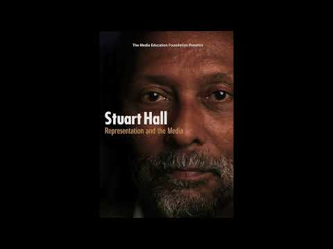

SOC 379 · Class video
Institutional Racism & Medical Media

Watch the video
This SOC 379 class video is hosted on YouTube. The thumbnail opens the public video page rather than embedding and auto-playing it.
SOC 379 · Class video

This SOC 379 class video is hosted on YouTube. The thumbnail opens the public video page rather than embedding and auto-playing it.